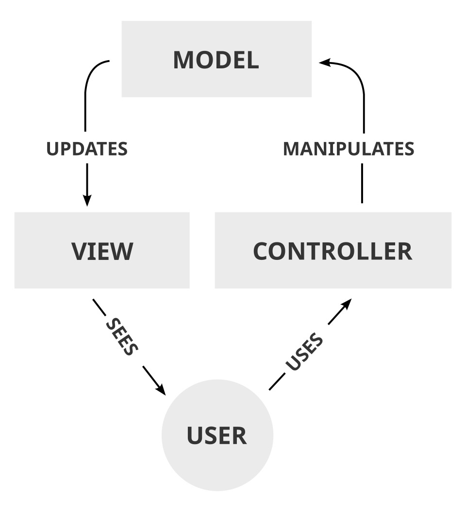
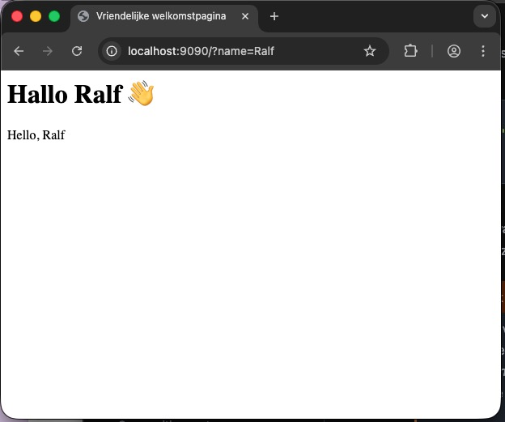

Templating#
Tot nu toe hebben we in de methode handle van onze diverse kernels eenvoudig een stuk tekst teruggegeven:
<?php
//andere code weggelaten
public function handle(Request $request): string
{
$name = $request->getQueryParams()['name'];
return "Hello, $name";
}
Hoewel dit werkt, spreekt het redelijk voor zich dat dit niet echt schaalbaar of onderhoudbaar is. In de regel bestaan responses uit vele kilobytes aan data, en de zou niet handig zijn wanneer we al deze data eenvoudig als string in een handle-methode zouden definiëren:
<?php
//andere code weggelaten
public function handle(Request $request): string
{
$name = $request->getQueryParams()['name'];
return "
<!DOCTYPE html>
<html lang="nl" data-content_root="../" >
<head>
<meta charset="utf-8" />
<meta name="viewport" content="width=device-width, initial-scale=1.0" /><meta name="viewport" content="width=device-width, initial-scale=1" />
<title>Request — Webtechnologie II</title>
<script data-cfasync="false">
document.documentElement.dataset.mode = localStorage.getItem("mode") || "";
document.documentElement.dataset.theme = localStorage.getItem("theme") || "";
</script>
...
</body></html";
Om deze reden willen we de html scheiden van de logica van onze applicatie. De gedachte is dan dat onze handle-methode het juiste html-bestand opzoekt en deze retourneert.
Behalve deze voor de hand liggende reden, zijn er nog twee eveneens belangrijke, maar minder evidente redenen voor deze scheiding. Allereerst is het schrijven van goede html een heel andere capaciteit dan het schrijven van progammacode – activiteiten die derhalve dikwijls door diverse personen worden gedaan. Een dergelijke scheiding maakt het samenwerking door deze personen een stuk eenvoudiger.
En zelfs – ten tweede – wanneer dezelfde persoon zowel de html als de programmacode schrijft, dan nog is het voor deze persoon lekker wanneer hij of zij zich helemaal kan richten op het één of het ander. Wanneer je de hele tijd moet schakelen tussen code of html zal dat de concentratie op beiden niet ten goede komen.
Model-View-Controller#
De scheiding tussen logica, html en data kent binnen software engineerin een relatief oude en goede traditie – ouder dan internet of html. Het staat bekend onder de term Model-View-Controller, wat eind jaren zeventig is bedacht door Trygve Reenskaug. Zoals de naam al doet vermoeden, kent deze architectuur drie onderdelen:
Het model is de interne representatie van de informatie die door het systeem beschikbaar gemaakt wordt.
De view is de presentatie van deze informatie, dat wat de bezoeker of gebruiker van de applicatie ziet en waar hij of zij mee interacteert.
De controller is de applicatielogica die de verbinding maakt tussen de view en het model.
Zie het plaatje hieronder (van wikipedia). Hierin zie je hoe de gebruiker van een systeem interacteert met de controller. Deze controller verandert de interne representatie van het model, waardoor de view geüpdate wordt, wat de gebruiker vervolgens weer ziet.

Er zijn verschillende antwoorden mogelijk op de vraag hoe de view aan de actuele informatie komt. In het plaatje hierboven komt het over alsof het model zelf verantwoordelijk is voor het updaten van de view, maar meestal gaat dat via de controller. Er zijn overigens in de loop der tijd allerlei subtiele varianten van het standaardmodel bedacht, zoals Model View Adapter, het Model View Presenter of het *Model View ViewModel (wat in iOS applicaties gebruikt wordt).
In een webcontext is het model in de regel een database, de controller wordt gevormd door de verschillende controllers (waar we het al over hebben gehad) en is de view de uiteindelijke html die door de client wordt gerenderd. Het is de bedoeling van de controller om de representatie van de data in de view te injecteren en deze vervolgens naar de client te sturen.
Een html-bestand inlezen#
Laten we verder gaan met de HelloKernel, waar we in hoofdstuk 3.1 mee zijn begonnen. Dankzij de DSL-opbouw van PHP is het vrij eenvoudig om direct een html-bestand in te lezen. Stel je voor dat we het onderstaande (zeer eenvoudige) html-bestand welkom.html in een directory templates hebben gezet:
<html>
<head>
<meta charset="UTF-8">
<title>Vriendelijke welkomstpagina</title>
</head>
<body>
<h1>Hallo allemaal 👋</h1>
</body>
</html>
De methode handle in HelloKernel zag er tot nu toe als volgt uit:
<?php
//andere code weggelaten
public function handle(Request $request): string
{
$name = $request->getQueryParams()['name'];
return "Hello, $name";
}
We kunnen de html van hierboven eenvoudig in deze methode inladen, door gebruik te maken van de - inmiddels overbekende - functie require:
<?php
//andere code weggelaten
public function handle(Request $request): string
{
$name = $request->getQueryParams()['name'];
require 'templates/welkom.html';
return "Hello, $name";
}
Als je dit stukje code uitvoert, zul je zien dat een request naar de juiste pagina inderdaad de html laat zien:

Dit resultaat is te verwachten wanneer je bedenkt hoe require ook al weer werkt: deze functie laadt een pagina in en voert de code daarin direct uit. Omdat dit html is, en er feitelijk geen php-code in staat, is het resultaat van deze functie-aanroep gewoon de html die in het betreffende bestand staat. En je ziet dat het return-statement in handle ook nog steeds effect heeft: de html wordt dus als het ware middenin die functie naar de client gestuurd.
Vanzelfsprekend is dit ongewenst gedrag. Niet alleen willen we niet dat er zomaar middenin een functie data naar een client wordt gestuurd, maar we willen ook controle houden over de data zolang deze zich in de functie bevindt.
Output buffering#
Om te voorkomen dat de output direct (zo snel mogelijk) naar de client wordt gestuurd, kunnen we gebruik maken van een techniek die bekend staat onder de naam output buffering. Wat dit feitelijk doet is alle data die normalitair zou worden uitgestuurd (geprint naar de terminal, verstuurd naar een client) tegenhouden, net zo lang totdat het commando gegeven wordt om de opgeslagen output uit te printen (te flushen).
In php zijn hiervoor de volgende commando’s van belang:
ob_start(): aanzetten van *output buffering. In de documentatie lezen we “While output buffering is active no output is sent from the script, instead the output is stored in an internal buffer.”ob_flush(): het versturen van de inhoud van de buffer naar de output handler.ob_get_clean(): haalt de huidige inhoud van de output buffer op en zet het bufferen weer uit.
Met deze kennis kunnen we de handle-methode in de Kernel als volgt aanpassen:
<?php
//andere code weggelaten
public function handle(Request $request): string
{
ob_start();
$name = $request->getQueryParams()['name'];
require 'templates/welkom.html';
$html = ob_get_clean();
return $html . "Hello, $name";
}
Als je dit runt, zul je zien dat het resultaat nog steeds hetzelfde is. Dat is ook logisch, want functioneel hebben we eigenlijk nog niks aan de code veranderd. We weten evenwel hoe we php in html kunnen laten zien, bijvoorbeeld door gebruik te maken van de short-tag <?= ... ?>. Omdat de scope van $name binnen dezelfde score als de ob_start() valt, is deze variabele ook onmiddellijk bekend binnen onze template:
<html>
<head>
<meta charset="UTF-8">
<title>Vriendelijke welkomstpagina</title>
</head>
<body>
<h1>Hallo <?= $name ?> 👋</h1>
</body>
</html>

De functie Eval#
Net als in de meeste andere programmeertalen kun je ook in php een string als php-code laten uitvoeren: in php gebruiken we hiervoor de functie eval. Zie het onderstaande voorbeeld: op regel 2 definiëren we een variabel $str die een stukje valide php-code bevat. Deze code wordt op regel 3 uitgevoerd, waardoor de variabele $demo geïnitialiseerd wordt en een waarde krijgt. Vervolgens wordt op de laatste regel die variabele afgedrukt.
1<?php
2$str = "\$demo=32;";
3eval($str);
4echo $demo;
Je ziet dat we $demo niet echt expliciet hebben gedefinieerd: de IDE geeft ook aan dat die variabele niet bestaat - wat logisch is, want die IDE gaat niet al je strings langs om te checken of er toevallig valide php-code in staat, en gaat die zeker niet zonder meer voor je uitvoeren.
Gevaarlijk
Je kunt je voorstellen dat deze functie behoorlijk gevaarlijk is, omdat het zonder meer arbitraire php-code kan uitvoeren. Naar het schijnt heeft Rasmus Lerdorf himself ooit gesteld dat “if eval is your answer you are probably asking the wrong question”.
Toch maken we voor dit onderdeel gebruik van deze functie. Dat kan op zich ook wel, zolang we maar de controle over de gebruikte templates en de data in eigen beheer houden.